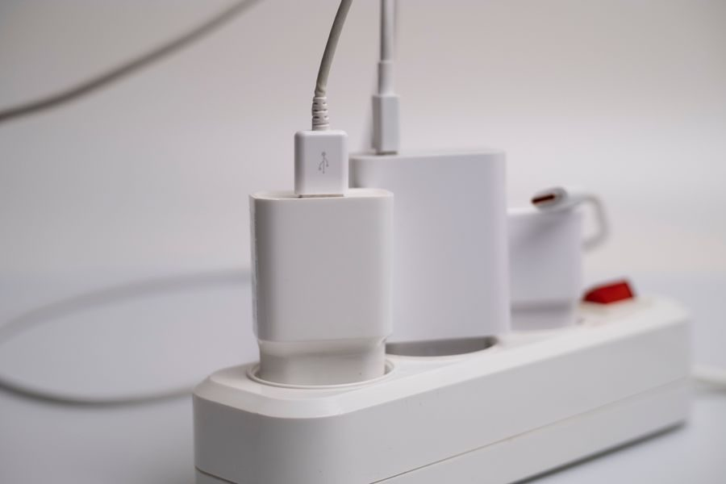

El mejor
El que compraría primero. Saber lo que gasta cada aparato es lo único de la domótica barata que se paga solo.
Ver precio actual en AmazonPrecio de hoy, en Amazon. Enlace de afiliado.

| Carga máxima | 3.680 W · 16 A |
|---|---|
| Medidor de consumo | Sí, en tiempo real, dentro de la app Tapo |
| Wifi | 802.11 b/g/n en 2,4 GHz |
| Concentrador | No hace falta: se conecta directo al wifi |
| Consumo propio | 1,64 W encendido · 0,64 W en reposo |
| Medidas | 72 x 51 x 40 mm |
| Temperatura de uso | De 0 a 35 °C |
| Asistentes | Alexa y Google Assistant |
Datos de la ficha oficial del fabricante (tp-link.com/es — Tapo P110), consultada el 2026-09-03. No publicamos ningún dato que no podamos comprobar ahí.
No ponemos precios porque cambian cada día. Lo ves actualizado al entrar.
¿Comparándolo con otros? En la guía de los mejores enchufes inteligentes en calidad-precio están las cuatro opciones de la categoría: la mejor, dos de gama media y la mejor barata.